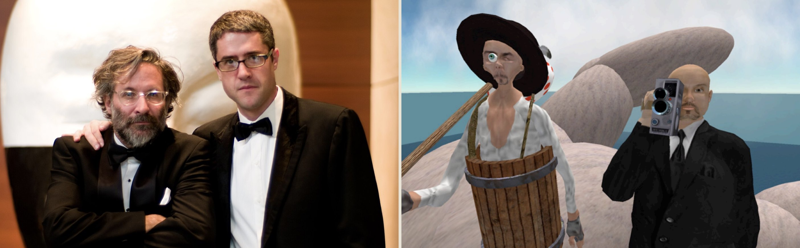
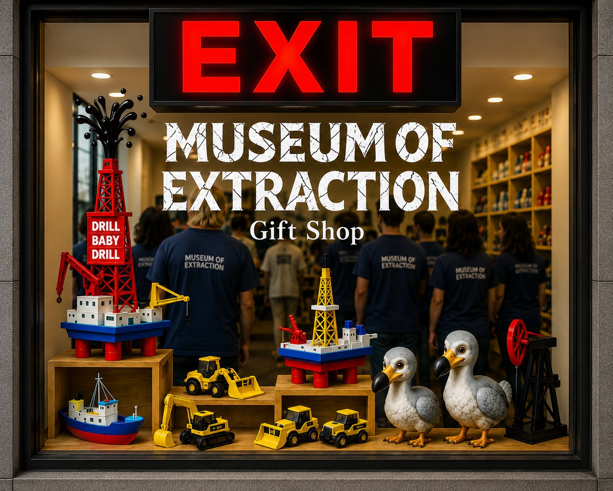

“Extraction is the result of always taking more than you leave behind.”
“Walking with a friend in the dark is better than walking alone in the light.”
Helen Keller
Searching for the Creator
Two men in tuxedos. Two avatars on a road. The pilgrim with the camera, and the one-eyed sidekick nobody wrote the reviews about.
Read the letter →Exit through the Gift Shop
Seven months. Thirty calls. Fifty documents. One word, hanging over the whole thing the entire time.
Read the goodbye →“machines seized not only your means of production, but also the story itself. And how, in the end, you didn’t just lose your job. You lost the plot, becoming a peasant once more, scythe in hand, harvesting information for the Wheat King.”Museum of Extraction
“You don’t reboot your operating system with your zip-code and an iPhone, somewhere in the birth canal of a museum a thousand miles from where you live.”Exit through the Gift Shop · 2026
The Collection
Three objectsThe Book
The foundational text, the museum it builds, and the passages where extraction defines itself.
Read the passages → Object IIThe Letter
On the film, the play, Vivian Kendall, and the one precious thing made not of gold.
Read in full → Object III
The Goodbye
Why the co-director left, what replaced the groups, and the word above a museum that doesn’t exist.
Read in full →Exit through the Gift Shop
Seven months. Thirty calls. Fifty documents. One word, hanging over the whole thing the entire time.
Read the goodbye →